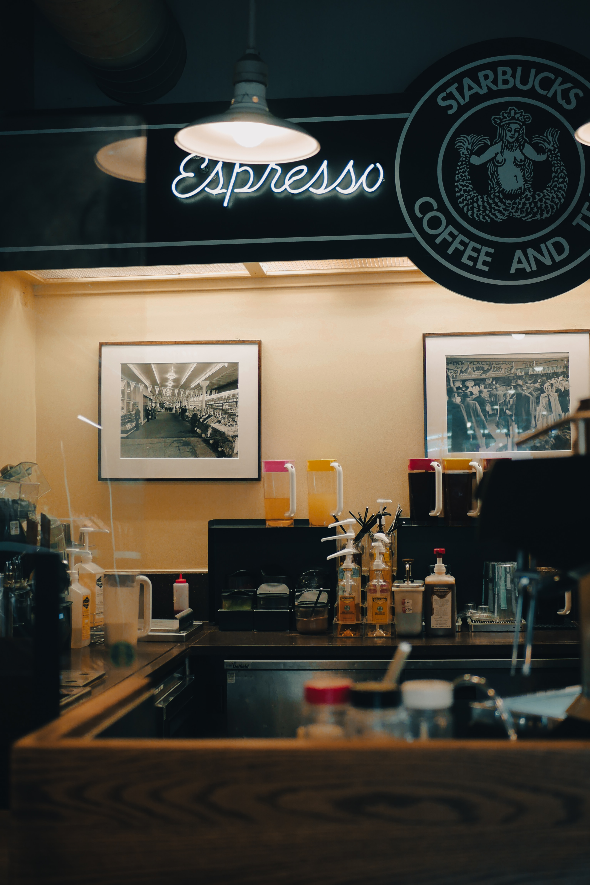

1.Restaurant Reviews:
Detailed reviews of local restaurants, including information about their ambiance, menu, pricing, and must-try dishes. Include high-quality photos of the food and the restaurant's interior.
2.Cuisine Guides:
Provide guides to different cuisines, explaining the key ingredients, cooking methods, and the best places in your area to try them. For example, "The Ultimate Guide to Daal Bati" or "Exploring Indian Cuisine."
3.Local Foodie Interviews:
Interview local food enthusiasts, chefs, or restaurant owners to get insights into the local food scene, trends, and their favorite dishes.
4.Food Events and Festivals:
Upcoming food-related events, festivals, and food truck gatherings in your area. Include dates, locations, and what to expect!!.
5.Healthy Eating Guides:
Provide information on healthy dining options, vegetarian or vegan restaurants, or tips for making healthier choices at restaurants.
6.Hidden Gems:
Underated cafes, food spots in your city or town. These could be small family-owned restaurants or food trucks.
7.Local Food News:
information about restaurant openings, closures, and other food-related news in your area.
